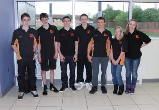
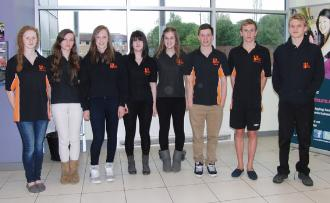
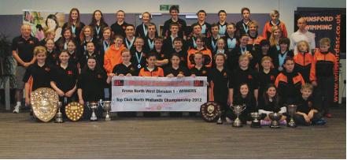
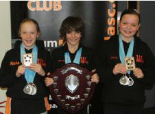

2012
Winsford swimmers at the NATIONALS 2012
Congratulations to all our swimmers who took part in the British National Youth and Age Group Championships held at Ponds Forge, Sheffield.
The National Youth Championships ran from 17 – 21 July and Winsford certainly made their mark.
Vicky Cunningham swam in three events - 50m, 100m and 200m Freestyle. She swam exceptionally well and qualified for the semi-final of the 200m. The result of this was 15th place out of 66 competitors! – An excellent result.
Next up was Jess Gallimore who swam in the 100m Backstroke. Jess had a great swim and gained 41st place over all. A total of 94 competitors took part in this race alone, so again, a huge achievement.
The National Age Group Championships took place from 22 – 26 July. What an exciting week that turned out to be! Without doubt, the star of the show was Ashley Hogg. He qualified for 7 events. It is on good authority from Dave that this is a first in the history of Winsford ASC! His races and the results are :-
200m Breaststroke – 12th in Heat and 14th in Semi-Final
200m Individual Medley - 14th in Heat and 13th in Semi-Final
400m Individual Medley – 11th in Heat (no Semi-Final in this event)
400m Freestyle - 12th in Heat and 10th in Final
1500m Freestyle - 6th (No Heats in this Event)
100m Butterfly - 4th in Heat, 4th in Semi & 7th in Final
200m Butterfly - 17th in Heat
There was also more success to come as Ashley learned that he had achieved 5th place in the BAGCATS. Ashley certainly excelled himself and has proved to be a major asset to the club. However, the glory did not end there. The Boys relay Team - Ashley Hogg, Sam James, Cameron Jones and Brandon Sharkey, qualified in all three events.
The first event was the 4 x 100m Freestyle. They were ranked 33rd out of 40 going into the event and finished in 19th place. The boys were delighted to finish in the top twenty.
Their ranking in the 4 x 200m Freestyle was 27th out of 40 and they finished in 21st place. Another great swim, proving that all the extra training and hard work paid off.
However, they saved the best until last in the 4 x 100m Individual Medley. They were ranked in 35th place out of 40 but stormed through to win 12th place, only just missing out on the final!
This was the icing on the cake as they beat many of the top clubs in the North West, including Manchester and Stockport Metro. A great time was had by all at Nationals and hopefully the club will continue to thrive in the future. All the results can be found on the ASA website.
Winsford Summer Development Meet
This was a massive turn out from Winsford swimmers, which all 49 swimmers swam excellent, the club achieved 41 Golds, 35 Silvers and 31 Bronze medals making a total of 107 medals won at the meet. Second was Ormskirk Otters with 40. Full results on open meets and on club results page.
A huge massive thank you to all that helped out with Winsfords 3rd Summer Meet, list to long to mention all but you know who you are, if you helped before or during the event, without your help volunteering this meet wouldnt have been the success it was. Another big thank you to Brio and leisure centre staff, in aiding us with this gala.
We have already recieved great response from visiting clubs (see memebers page), on how professional it was run, and they will be returning next year. We were full to capacity with the meet, even having to inform clubs we couldnt take anymore swimmers proving what a popular meet we hold. And a big well done to all our swimmers who swam excellent, picking up medals, PBs and meet records. (see reults page).
And last but not least to the companies that sponsored us, Winsford Weatherspoons for supplying the water to keep everybody hydrated for the day, Cheshire Fire and Rescue Service for printing of the programme and to ASDA for supplying the lovely fruit which was delicious.
Holywell summer meet
Alisha Hawkins flew the flag for Winsford swim club at Holywell summer meet, she swam in all nine events achieved seven PBs, 5 Golds, 1 Silver and 1 Bronze, 2 meet records in the 100m free and 100m backstroke, and on top of all that collected a trophy for top girl in her age group.
National Relay Team
The quartet of Sam James, Cameron Jones, Brandon Sharkey and Ashley Hogg made up the boys team (11 to 14yrs) who for the first time since 2004 when Winsford last produced a national relay team, achieved 3 National Age Group qualifying times. The team took part in the 4 x 100m Free & Medley event and the 4 x 200m Free event. Placed 8th in all 3 events, their times was good enough to make the top 40 places in the UK. (see photo below)
North West Regional Age Group
Winsford swimmers were amongst the best at this year’s Northwest Region Age Group Championships in Manchester, bagging a total of 8 (eight) medals, 15 (fifteen) individual finals, 3 (three) National Age Group relay qualifications and a Regional top 11th place, making Winsford Swimming Club the 3rd best competitive club in Cheshire.
Wrexham Cath Ankers
Winsford SC took 25 swimmers (11 from Development Squad) to the Cath Ankers Meet in Wrexham. All swimmers performed fantastically well gaining many new PB’s (which can be used in future meets), top 6 and many medals. It was so pleasing to see so many Winsford swimmers finishing in the top 6 and racing with great determination. This was a very successful meet for the Development Squad and each swimmer would have gained a lot of valuable experience of putting their skills learnt in training into a competitive environment, against some very strong opposition. Congratulations to all participants everyone did fantastic.
Hall of Fame
After a long awaited return, the Hall of Fame is back and updated. Here are some of the swimmers who have achieved times to make it and there has been some long serving HOF times that have been replaced.
Abbey O Brown - Alisha Hawkins - Amy Booth - Jess Gallimore - Charlotte Carter - Victoria Cunningham - Ethan Jones - Jamie Young - Ashley Hogg - Alex Mitchell - Sam James - Brandon Sharkey - Callum Chapple and Oliver Rose.
Amy Booth - 14U 800m Free 4yr record
Abbey O Brown - 9U 25m Back 5yr record
Alisha Hawkins - 10U 100 Fly 6yr record - 9U 200m Free set record - 10U 200m Free 8 yr record - 10U 50m Free 5yr record - 10U 200m Back 5yr record - 10U 50m Fly 6yr record - 10U 200m Fly set record - 10U 400m Free set record - 10U 800m Free set record
Charlotte Carter - 16U 100 Fly 7yr record
Victoria Cunningham - 200 IM 7yr record
Ethan Jones - 9U 200m Free 13yr record - 9U 100m Breast 6yr record
Jamie Young - 11U 1500m Free set record
Ashley Hogg - 11U 50m Back 9yr record - 12U 200m Free 7yr rec - 12U 400m Free 6yr rec - 13U 400m Free 6yr rec - 13U 200m Breast 7yr rec - 13U 200m Fly 6yr rec -
Brandon Sharkey - 12U 50m Fly 7yr record
Sam James - 12U 100m Back 9yr record - 13U 50m Back 8yr rec - 13U 50m Fly 7yr rec - 13U 200m IM 7yr rec - 14U 200m IM 7yr rec
Oliver Rose - 14U 50 Breast 6yr record - 14U 100m Breast 6yr record - 14U 200m 7yr record
Head Coach round up of achievements for the season
And What A Season -
Division 1 Champions and promoted to the Premier division - Arena league
North-Mids top club
Top 5 in the County Champs
11th overall club - Regional Age Group Champs
1 British champs qualifier
2 Youth National qaulifier's
1 National Age Group qaulifier (7 events)
Frist ever Winsford swimmer to compete in the Scottish Short Course Nationals
Awarded the best sporting club
And - A relay team in the National Champs
The last time we managed to get a relay team to the Nationals Champs was in 2004, its taken 8 years for us to re-cycle our swimmers to repeat the succuss
A night at the Oscars in Winsford
The Mayor supported by local businesses held its own oscars, at the Brio Leisuer Centre. Winsford Swimming Club had been nominated for Sports Club of the Year. And we WON, Winsford Swim Club is SPORTS CLUB OF THE YEAR.
SPORTS CLUB OF
THE YEAR 2012
Head Coach Dave, was there to collect the award after it was announced, accompanied by Barry Keeling (Chair), Neil Hawkins (Club Secretary) and Karen Chapple (Treasurer).
5-6 May 2012
Wrexham Spring Meet
A squad of 20 swimmers visited Wrexham, and what a performance from the swimmers who went, 69 PB's were achieved over the weekend of swimming. Ashley Hogg gained yet another National Qualifying time for the 200m Breaststroke. Medals were won by: Brandon Sharkey 9 Golds, 2 Silvers - meet record for 50 fly and 100 fly. Brendon Ion 2 Golds, 1 Bronze. Alex Scott 1 Gold, 2 Silvers, 2 Bronzes. Alisha Hawkins 1 Gold, 3 Silvers, 2 Bronzes. Ashley Hogg 4 Golds, meet record for 200 fly, 200 breast and 100 back. Taryn Lawson 2 Bronzes. James Shanley 1 Silver. Poppy Howe 1 Bronze. Adam Blackshaw 2 Silvers, 1 Bronze.
North West Regional Age Squad for 2012
Representing the Age Group category are:
Sam James
Cameron Jones
Brandon Sharkey
Oliver Rose
Ashley Hogg
Alisha Hawkins
Kate Young.
North West Regional Youth Squad for 2012
Representing the Youth Group category are:
Charlotte Carter
Vicky Cunningham
Amy Booth
Lizzie Oliver
Molly James
Callum Chapple
Alex Law
Sam Hancock
and Emma Wilmer
28-29 April 2012
Statellites 25th Anniversary - Macclesfield
Winsford Amateur Swimming Club showed their continuing strength and sheer determination to be the best by scooping up an impressive amount of medals and smashing personal best times at the Satellite Open Meet held at Macclesfield Leisure Centre end of April.The team of 22 swimmers attending, saw over half of them making the finals: Adam Blackshaw, Hannah Young, Kate Young, Sam James, Jess Gallimore, Brandon Sharkey, Charlotte Carter, Ashley Hogg, Abbey Brown, Ethan Wright and Alex Law. A spot for third best girl of the competition for Jessica Gallimore, was narrowly missed by 1 point.
The club’s success continued with some of the swimmers gaining entry times for the Age Group North West Regional Gala to be held in June at Manchester Aquatics Centre. The Youth category of the North West Regional Gala, again at Manchester Aquatics Centre, is being held this weekend. This year, the club is proud to announce that sixteen of their swimmers have achieved the required entry times to attend these galas.
Two swimmers, Ashley Hogg (13) and Jess Gallimore(16) excelled by reaching the required standard to compete at the British National Youth & Age Championships to be held in July. Head Coach Dave Pettengell “That was a superb display of swimming, every swimmer gaining personal bests, some reaching or adding to already gained regional times and others performing to make the Nationals. This is always a good sign to know the swimmers and Winsford Club are heading in the right direction”.
3 March 2012
Cheshire Championships - Macclesfield
Winsford Amateur Swimming Club’s run of victories continued at the recent 2012 Cheshire County Championships coming home with a haul of forty six medals. The championships, held over three weekends at Liverpool Aquatic Centre and Macclesfield Leisure Centre, in March, are a showcase of the best swimmers in the county and Winsford have certainly proved that they can compete against the bigger City clubs such as Stockport Metro and Warriors of Warrington.
Our team of swimmers added to their success as many swimmers smashed their personal best times and some gained qualifying times for the North West Regional Galas to be held later on in the year. Nine year old Abbie Brown, making her debut at the Championships, provided a star performance by gaining two silver and two bronze medals. Her efforts were further rewarded with second place in the BAGCATs. Also gaining places in the top ten were Boys (13) Ashley Hogg, Sam James and Brandon Sharkey, (14) Oliver Rose, (15) Callum Chapple, (16) Alex Law, Girls (15) Amy booth and Molly James.
The relays rounded off the event with the 13/14 year old boys providing a nail biting performance, narrowly missing victory in both the 200m Freestyle and 200m Individual Medley against their biggest rivals, Warriors of Warrington. Winsfords Club Captain, James Shanley added: “Well done to everyone who competed, winsford swimming club made a good account of themselves especially in supporting in team events and the skins event. There were also some spectacular swims from particular people in our club showing very encouraging signs for the future”.
Winsford swim club are proud to announce that this years regionals will be attended by 18 swimmers, Charlotte Carter, Callum Chapple, Sam James, Molly James, Brandon Sharkey, Cameron Jones, Ashley Hogg, Amy Booth, Vicky Cunningham, Emma Wilmer, Oliver Rose, Elizabeth Oliver, Kate Young, Alex Law, James Mitchell, Emma Rodaway, Sam Hancock and our youngest swimmer eleven year old Alisha Hawkins.
12 February 2012
Cannock Phoenix - Wolverhampton
Coming
28 January 2012
Northern Zonal Meet - Sheffield
Vicky Cunningham achieved 2 excellent results in the 50M Free at the Northern Zonal Meet in Sheffield on the 28th January. In the heats she swam a PB of 27.36 and bettered this with a swim of 27.07 in the final. A massive improvement of 0.53 seconds on the day and a British Championships qualifying time.
14 January 2012
North Midlands Championshops - Top Club
WELL DONE to all the swimmers who took part in the North Mids Championships. Thanks to your efforts we have been awarded the TOP CLUB trophy. There were gold medals for Victoria Cunningham, Joanna Waterman, Abbey Brown, Ashley Hogg, Molly James, Oliver Rose, Ethan Jones, Sam James, Callum Chapple and Emma Rodaway. Silvers were won by Amy Booth, Alisha Hawkins, Jordan Gaskill, Kate Young, Poppy Howe, Alissa Blackshaw, Emma Wilmer, Brandon Sharkey, Sam Hancock, Charlotte Carter, James Mitchell and Alexander Law. Cameron Jones won a bronze medal.
Vicky also won the Senior girls skins event and Ashley came 2nd in the Junior Boys. 
Ethan Jones won the Top Boy in the 9 year old age group and Alisha Hawkins and Alissa Blackshaw both came 3rd in their respective age groups. Club captian James Chanley said: "It was a great team effort from eveyone, from the coaches to the youngest swimmers who competed for the first time. Everyone supported each other brilliantly".
10 December 2011
Arena North West Division - Winners
Winsford after being promoted from division two last year, started the season off to a good start in division one, showing signs of why they won division two last year they kept on the pressure with a collection of top first finishes. This continued throughout the rounds, to only be kept of top spot by a couple of points, so they went into the final reserving one of the middle lanes. Well the final saw everything, would be favourites fall behind, underdogs taking valueable points, the points of three teams change throughout the whole final, barely seperated by a couple of points, one of our swimmers wrongly awarded 5th place when they infact came first, that was later rectified. After a well fought out final, Winsford came out on top and collected the title of Arena North West Division Champions, into the Premiership next year, going head to head with some big clubs. The final was a great show of high standard from all the clubs that got there, the team spirit was immense, banners, sashes, hats, blowers, the noise was over welming. a great big WELL DONE to all the Winsford swimmers who swam in any of the rounds and the final.
|